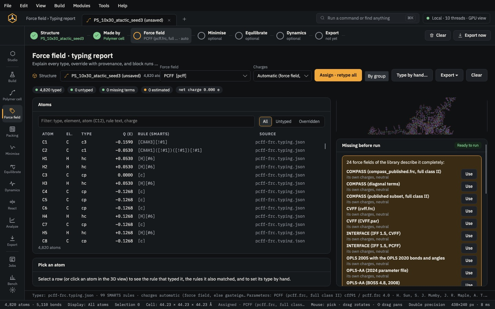

Build · module 10
Surface & interface
Cleave a slab from a crystal, choose its termination and vacuum, and build interfaces: a polymer film grown against the surface, a grafted brush, or a stack of layers with the lattice mismatch shared between them.
Open it Build›Surface / slab…
- You start with
- A crystal (the open one, or a CIF).
- You get
- A slab, or a slab with a polymer film — the surface held in place for Minimise.
Step by step
Cleave
Miller indices h k l (default 0 0 1), the source crystal or Open CIF…, the thickness in layers (3), vacuum (15 Å), the termination and a surface supercell. Tick Rectangular surface cell (needed for a film) for a film.
Add a polymer film (optional)
Switch on Polymer film: a free film grown against the surface, or a brush grafted to surface sites (σ in chains/nm²). Thickness 25 Å, density 0.9 g/cm³, units per chain and the gap to the surface.
Stack layers (optional)
Add layer: this slab again (a sandwich) or a structure file; or a Polymer cell. Lattice matching shows the strain per layer, which can be shared between them.
Build
Build slab, or Build interface with a film or layers. The surface is molecule 1 and is held in place in Minimise.
Type each part
Force field › By group: an inorganic model for the slab (for example IFF, clay or glass sets) and the polymer's own force field for the film. Then Analyze gives the interface density profile, adhesion and pull-out.
The same without the Studio
Every Studio page calls the same core as the caps command and the caps Python package, so a step you clicked can be repeated in a script.
caps surface quartz.cif -o slab.data --hkl 0,0,1 --layers 3 --vacuum 15 --list
caps interface quartz.cif -o film.data --units '*CC(C)=CC*' --film 30 \
--film-density 0.9 --chains 8 --dp 10Where to go next

PrepareForce fieldType every atom from SMARTS rules, set charges, fill any missing term and give each part of a composite its own force field.PrepareMinimiseRemove close contacts, compress a low-density cell to its target and relax the box.